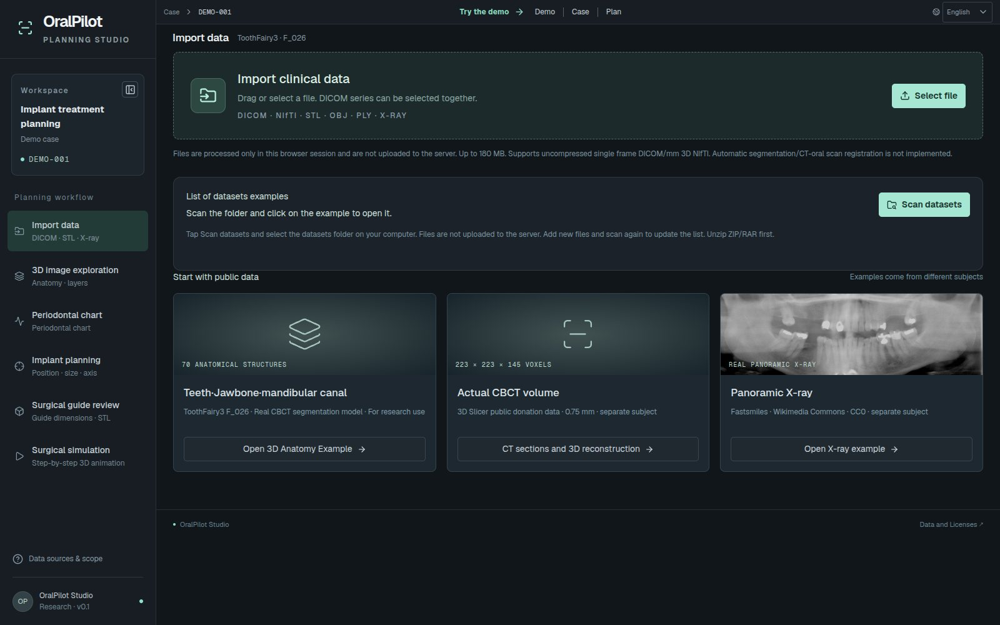
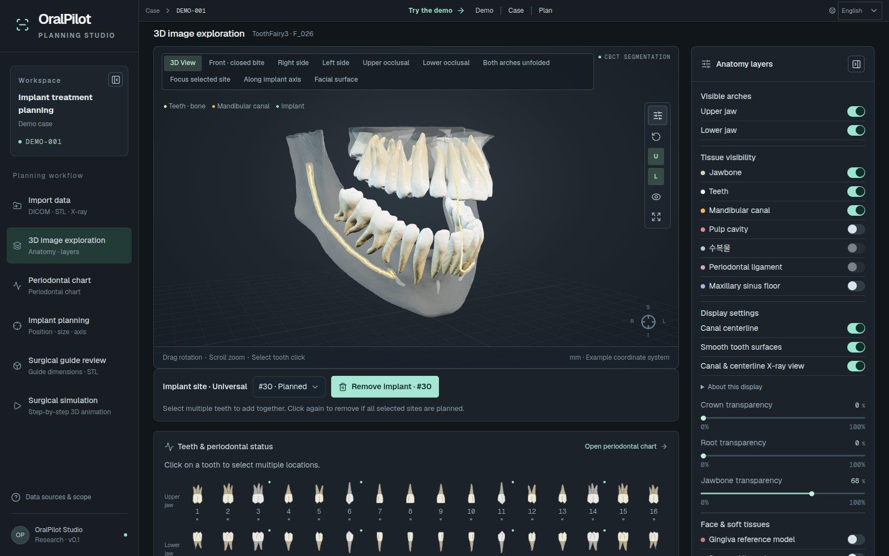
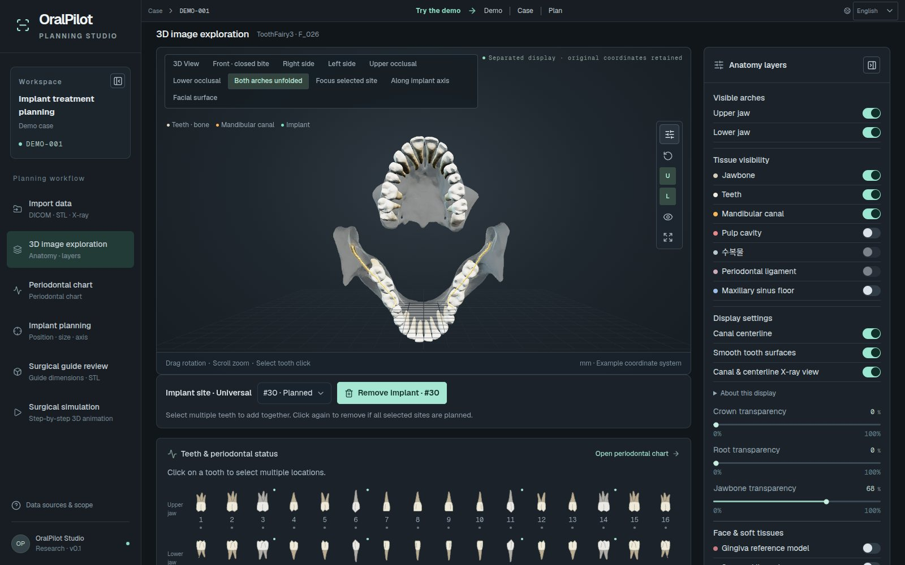
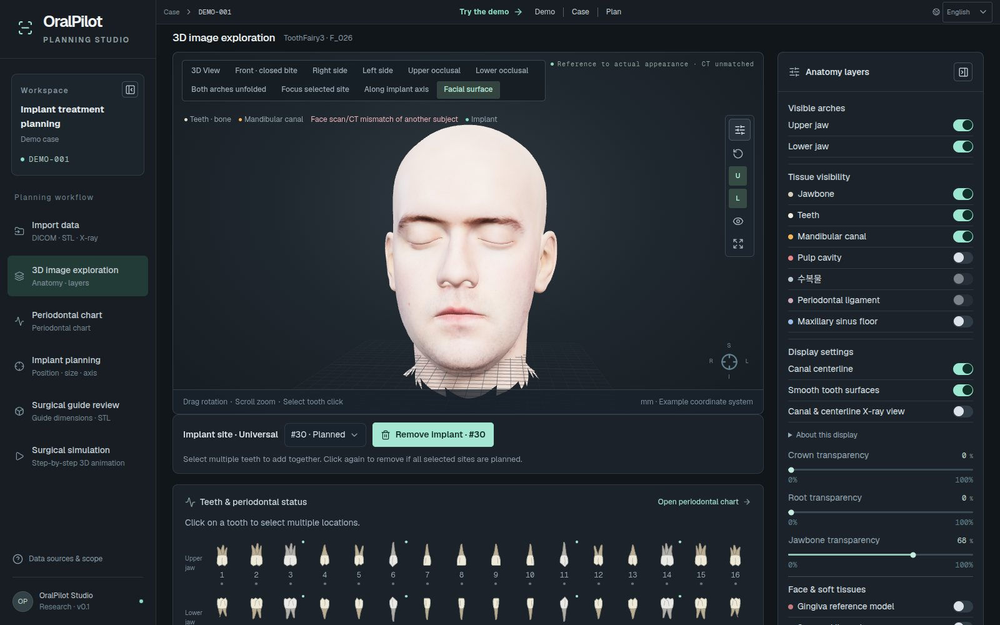
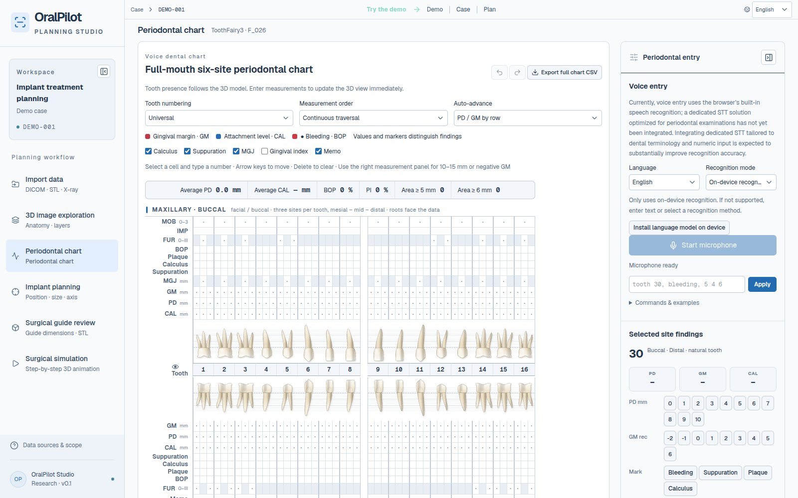
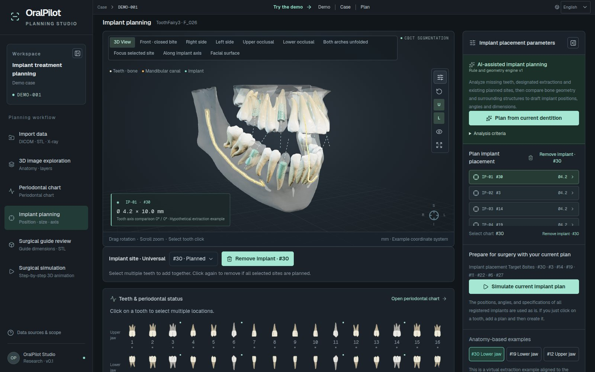
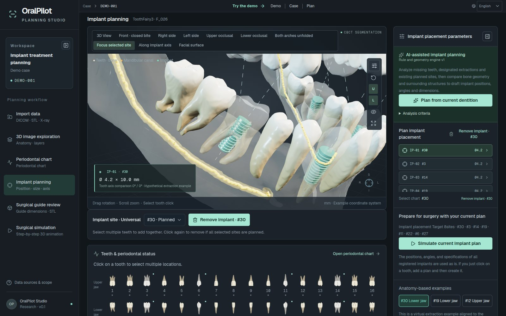
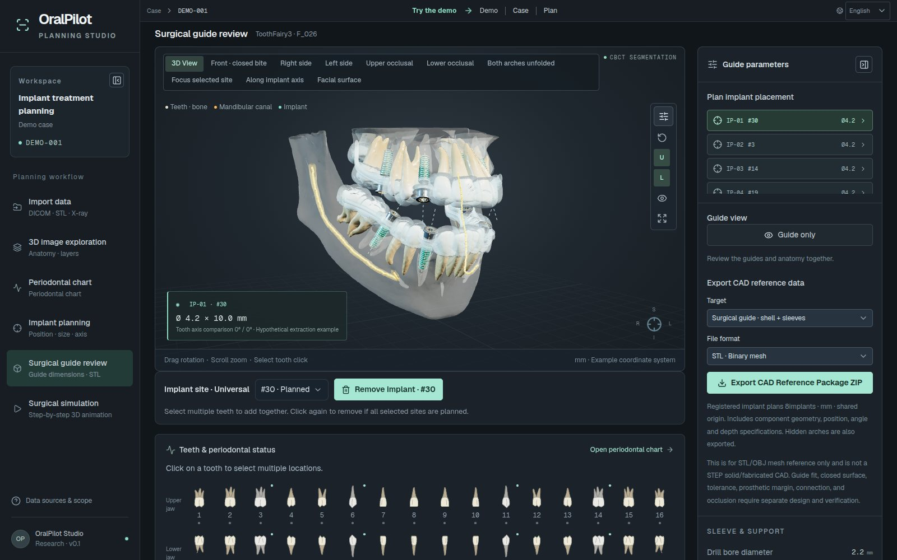
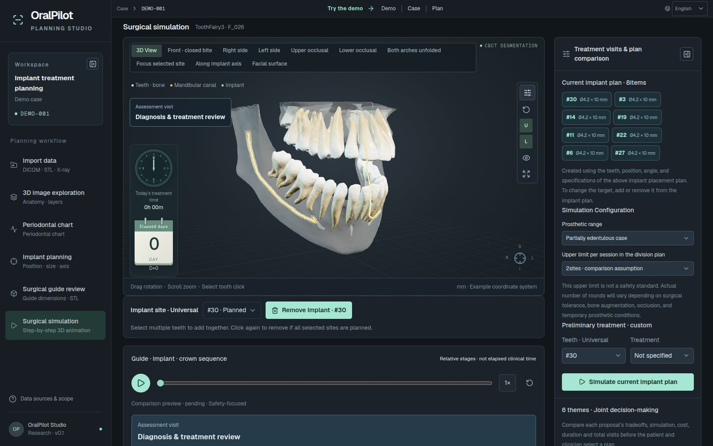

Solutions OralPilot
OralPilot
An implant treatment-planning studio that unifies 3D anatomy, periodontal charting, implant placement and surgical simulation in a single workflow. Clinical files never leave the browser.
- DICOM · NIfTI · STL · X-ray input, processed only in the browser
- 3D exploration of 70 structures, including teeth, jaws and mandibular canals; 6-point periodontal chart
- Rule-based geometric analysis drafts position, angle and size
- Surgical guide review and step-by-step surgical simulation

Workflow
- Import data
- 3D image exploration
- Periodontal chart
- Implant planning
- Surgical guide review
- Surgical simulation
Screen demo
Key screens
9 key screens from the live demo walk through the features. Use the previous and next buttons, the arrow keys or the strip below; open the live demo to try it yourself.
-
01 / 09
Import data
Load DICOM, NIfTI, STL/OBJ/PLY or X-ray files. Files are processed only in the browser and never uploaded.
- DICOM single-frame series sorted and validated; NIfTI reading
- Surface extraction from a CT threshold (Marching Cubes)
- Surface files assembled in their original coordinates
-

02 / 09
3D image exploration
Explore 70 structures derived from public CBCT segmentation, layer by layer.
- 32 teeth · 32 pulp chambers · upper and lower jaws · left and right mandibular canals · maxillary sinus floor
- Show or hide each structure; crown, root and bone opacity
- Ten views, including front, side, occlusal and along the implant axis
-

03 / 09
Both arches unfolded
Unfold the upper and lower jaws to see the occlusal surfaces and mandibular canals on one screen.
- Canal surfaces and centrelines share the same transform
-

04 / 09
Facial surface
Overlay a real face scan to check how the teeth relate to the face.
- Face mask and soft-tissue opacity are remembered and restored
- Large assets load only when needed
-

05 / 09
Periodontal chart
Record a 6-point periodontal chart per tooth; 3D exploration and implant planning share the same record.
- PD · GM · CAL, BOP · plaque · calculus, mobility · furcation
- Voice or text commands (e.g. "46, bleeding, 5 4 6")
- Universal · FDI · Palmer numbering; CSV import and export
-

06 / 09
Implant planning
Edit the size and axis of several virtual implant plans.
- Diameter, length, two tilt angles against the tooth axis, mesio-distal and bucco-lingual shift, depth
- Approximate clearance to the mandibular canal and maxillary sinus
- Select teeth and add in bulk; plan drafts from rule-based geometric analysis
-

07 / 09
Focus selected site
Zoom in on the selected site to compare the original tooth axis with the planned axis.
- Original tooth axis (blue) and planned axis (yellow)
- Planned teeth shown semi-transparent
-

08 / 09
Surgical guide review
Review the concept guide geometry, which follows the plan.
- Partial-arch shell · metal sleeve · drill hole
- Guide-only view
- CAD reference package export (STL/OBJ ZIP), for research
-

09 / 09
Surgical simulation
Step through guide seating, drilling, placement, healing and prosthetics as 3D animation.
- Up to three staged alternatives, compared from six perspectives such as safety first or lower cost
- Joint selection recorded after patient and clinician consent checks
- Plan JSON and a printable HTML plan
Model
What the workspace covers
The anatomy is a research example derived from public CBCT segmentation data (ToothFairy3).
Specifications
Key specifications
| Anatomy | 70 structures from public CBCT segmentation: 32 teeth, 32 pulp chambers, upper and lower jaws, left and right mandibular canals, maxillary sinus floor |
|---|---|
| Input | DICOM single-frame series · NIfTI · STL/OBJ/PLY · X-ray images; up to 80M voxels and 180 MB; processed in the browser |
| Surfaces | CT-threshold Marching Cubes (working grid up to 112³) |
| Periodontal chart | 6-point PD/GM/CAL per tooth, BOP, mobility, furcation; voice and text input; CSV |
| Implant plan | Diameter · length · tilt · mesio-distal/bucco-lingual shift · depth; approximate canal and sinus clearance |
| Guide | Concept partial-arch shell and metal sleeve; CAD reference package (STL/OBJ ZIP) |
| Simulation | Guide seating → drilling → placement → healing → prosthetics; up to three staged alternatives |
| Saving | Plan JSON, printable HTML plan, browser draft storage |
Talk to us
Let's review what adopting this solution would cover.